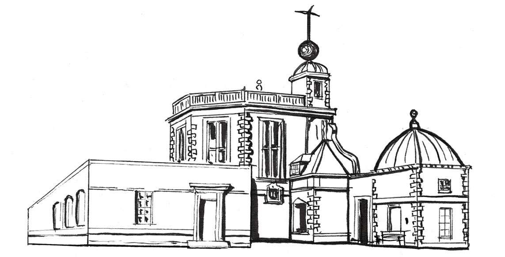
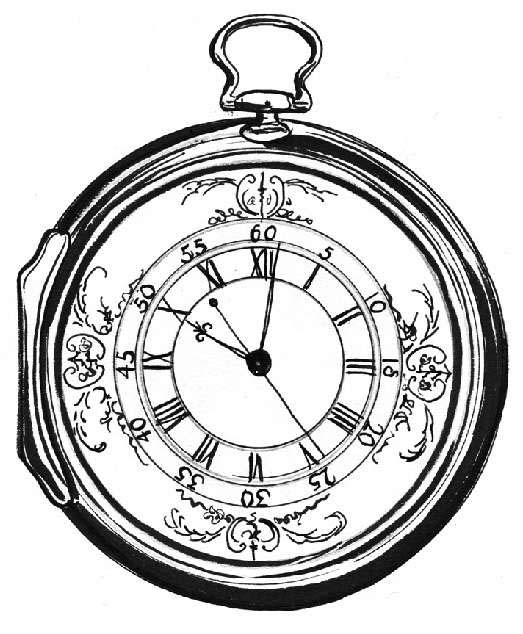
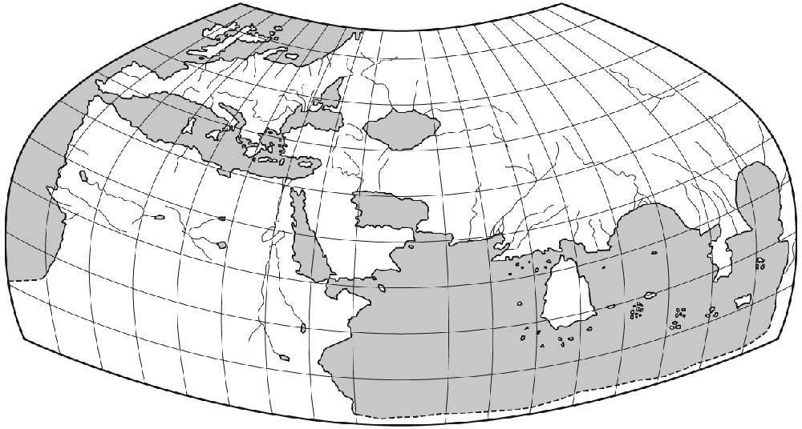

截至17世纪70年代，除海事界之外，人们并不需要一个通用时间。几年之后，情况发生了改变。当时，全球并没有统一时间，只有各地的地方时。在没有大众传播或基本设施的情形下，隔壁镇子或城市现在是几点钟其实根本不重要，只有当地教堂的钟声报时才重要。
然而对水手来说，知道准确的时间至关重要。准确的时间便于他们控制航向（后文会有更多介绍），掌握潮汐变化，因为根据潮汐时刻表可以知道何时涨潮何时退潮，这与选择航行时间息息相关。斯图亚特王朝时期，伦敦是海事生活的中心，泰晤士河上的格林尼治小镇被选为船只出海前校准时间的地方。
1675年，复辟的英格兰国王查理二世（就是那个规定马甲为正式着装的国王）决定在格林尼治建立皇家天文台，便于他的皇家天文学家 [8] “潜心钻研、全力以赴地校正天体运行表和恒星的位置，以便能准确地定出经度，使航海艺术臻于完美”。
皇家天文台由克里斯多弗·雷恩爵士（Sir Christopher Wren）设计并制造。雷恩爵士是伦敦大火后的主要重建者，曾负责圣保罗大教堂以及无数毁于大火的教堂的重建工作。他还在格林尼治山脚下为海军建造了格林尼治皇家医院。天文台就坐落在格林尼治山顶。天文台是英国第一个专门设立的科学研究机构，拥有全国最好的设备和望远镜。
虽然皇家天文台的主要工作是为发展英国航海事业而绘制天体图，但其最大的作用却是为从德特福德和格林尼治码头登陆的船员提供准确时间。托马斯·汤皮恩为天文台制造了两座大摆钟，安置在一个20英尺 [9] 高的八边形小楼内，每座钟的钟摆长达3.96米，每日误差仅2秒。即便船员每次出航前都会在格林尼治为手表和时钟校正时间并精心维护，长时间海上航行后，手表和时钟还是难免会有误差。下一节我将为大家介绍另一位钟表巨匠约翰·哈里森，他终生致力制造完美的航海时钟。
1883年，天文台的顶部安装了一个时间球，这样就免去了船员爬到山顶对时的麻烦。这个橘红色的圆球会在每天下午将近1点时升起，然后在1点整时准时落下，泰晤士河上的船员就可以待在原地给自己的航海时钟对时。这个橘红色的时间球至今仍在运行。几十年后的1855年，谢泼德门钟（Shepherd Gate Clock）被镶嵌在了天文台门外的墙上。这是一座24小时制的时钟，也是比较早期的电子钟，由主建筑内的主时钟所传递的电脉冲来驱动。据说谢泼德门钟是第一个向公众显示“格林尼治标准时间”（GMT）的时钟。

从1924年2月5日起，英国广播公司（BBC）开始直接从格林尼治传递报时信号，信号旨在帮助人们校正手表和钟表时间。报时信号总共6声，5短1长，最长的那一声会在整点时响起。因为广播信号以光速传播，所以报时信号可以很精准地传递到地球另一端，误差只有十分之一秒左右。
花钟
巧思的园丁把这些花卉
和香草的新日晷设计得多么灵慧
和软的阳光从高空凭照
沿着溢香黄道十二带奔跑
辛劳的蜜蜂 此时正忙于工作
和我们一样 拨算着它的时刻
这样甜美有益的时光
若非用花草 又怎能测量
——［英］安德鲁·马维尔（Andrew Marvell），《花园遐思》（The Garden ），1678年 [10]
安德鲁·马维尔写下这些诗句多年之后，植物学家林奈（Carolus Linnaeus）在1751年出版的著作《植物哲学》（ Philosophia Botanica ）中提出“花钟”这一概念。之后很多植物园根据林奈的建议种植花朵，利用花朵依序开放和闭合来区分一天中的不同时间。以苦苣菜为例，通常在早晨5点开放，中午12点闭合。山柳菊在凌晨1点开放，下午3点闭合。林奈推荐的最晚闭合的花是萱草，大概在晚上7~8点间闭合。但季节和天气变化导致花钟很难维护。
今天，我们所听到的报时信号不再从格林尼治传播，而是从英国国家物理实验室 [11] 传出，读取的是GMT的继任者——协调世界时（UTC）的时间。
16世纪至17世纪是“大航海时代”，环球贸易和人类活动发生了全球性变革。正如我们所知，航海是一场可怕的冒险，尤其是在茫茫大海中很难计算经度——地球上某地距南北走向的本初子午线以东或以西的度数。
航海家试图通过天体图和恒星所在位置进行一定运算，从而在海上定位，但常因误差过大而与目的地偏离，甚至导致船舶失事、船员遇难。面对如此巨大困境，1714年，英国议会悬赏2万英镑（折合今天约290万英镑 [12] ）举行一场竞赛，决意寻求解决判定经度问题的最佳方案。
英格兰约克郡自学成才的木匠兼钟表匠约翰·哈里森接受了这一挑战。他发明了一个在最恶劣的条件下也能计时的航海时钟，进而通过一种较简单、基于时间的方法来计算经度。整场竞赛中，哈里森一直在与天文机构抗衡。整个过程中，他的劲敌是一位得到经度委员会大力支持的天文学家内维尔·马斯基林（Nevil Maskelyne）。马斯基林致力用“月球距离法”计算经度。
在此后的40年间，哈里森共发明了五件杰出的航海时钟，从最初体积巨大装饰华美的H1，到最终趋于简约的H4和H5（可以承受海上航行冲击的超大型怀表），每一件都是钟表学史上的一次创新。在一场横渡大西洋、从英国至牙买加的旅行中，经过测试，H4的计时结果只比地面时间慢了5秒。当船返回英国时，哈里森本以为2万英镑的奖金即将收入囊中，谁料经度委员会声称H4的精准也许是运气使然，还需进一步测试。
H4第二次航行测试的目的地是巴巴多斯，最终误差仅为39秒。在这次航行中，同行的还有内维尔·马斯基林，他用“月球距离法”测量经度，最终误差为30英里，该结果固然可喜，但与哈里森的H4相比，仍显逊色。此外，跟利用航海时钟计算经度的方法比起来，马斯基林的方法费时又费力。

哈里森的H4
然而，经度委员会再次认为H4的精准纯属侥幸，需要由新任命的皇家天文学家——内维尔·马斯基林做进一步测试。毫无意外，马斯基林在测试报告中对哈里森的航海时钟性能做了非常负面的评价，哈里森得奖的希望又一次破灭。
尽管哈里森觉得他被天文机构“狠狠地耍弄”了，但是固执的他又开始制作H5。这一次，他得到了国王乔治三世（King George III）的支持。国王亲自测试了该时钟并报告了其令人吃惊的精准，他建议哈里森向议会申请全额奖金。在80岁高龄之际，哈里森终于得到8 750英镑的奖金，但他一直未获得正式嘉奖，而且也无其他人获得该奖项。三年后，即1776年，哈里森逝世，享年83岁，他的长寿也成为那个时代鲜有的事。到了19世纪早期，使用航海时钟确定经度已成为海上航行的常用方法。
为便于全球航海，本初子午线是大家公认的环绕地球的0度经线 [13] 。就像赤道将地球划分为南北半球，这条理论上的线将地球分为东西半球。然而，本初子午线的位置不像赤道那样一目了然，其界定过程充满争议。有很多国家当时都宣称这条看不见的0度经线应该从自己的国家穿过。
第一个有记载的经线出现在公元150年托勒密（Ptolemy）绘制的世界地图上，但本初子午线这一概念在公元前3世纪就已产生。托勒密地图中绘制的世界仅占当今地球面积的四分之一，西起西班牙西侧位于大西洋上的加那利群岛，东至亚洲的中国，北至北极圈以下，南至非洲上半部。

托勒密的世界地图，原作绘于公元150年
在这张地图上，本初子午线从加那利群岛中的耶罗岛（El Hierro）穿过，那是当时人们认识的大陆最西侧。托勒密地图和他所绘制的本初子午线的位置对制图学的影响一直持续到15世纪晚期，直至像哥伦布那样的探险家开始迅速扩张世界版图。
为了解决新发现的土地和领土的争端，在哥伦布的建议下，西班牙和葡萄牙为划分新大陆而签定的《托尔德西里亚斯条约》中，将本初子午线分别向南端和西边移动了点距离，西至非洲海岸的佛得角（Cape Verde），因而出现了著名的托尔德西里亚斯子午线。托尔德西里亚斯子午线在佛得角和加那利群岛间持续摇摆了200年。18世纪早期，英国因迫切想要解决经度划分的问题，便将格林尼治确定为本初子午线所在地。凭借英国拥有的众多航海信息和影响力，格林尼治子午线很快成为国际通用标准。1884年，在美国华盛顿特区举行的国际本初子午线大会上，正式确定格林尼治为本初子午线所在地，但法国代表在投票时弃权，所以1911年之前法国仍以巴黎作为经度起点。除经度外，大会还将格林尼治标准时间定义为全球通用的标准时间。
格林尼治本初子午线所在地现已成为热门景点，人们排队前来跨站在本初子午线两侧，脚踩东西半球拍照。到了晚上，天文台会射出绿色激光光束，穿透伦敦夜空，骄傲地标示出本初子午线位置，也就是那条出现在现今每张地图上的地理经度起点和测量标准的线。